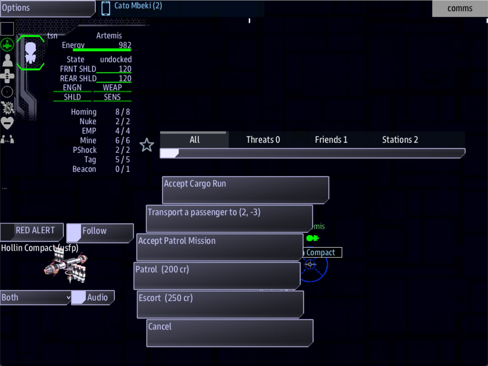

Class 5, Lecture 3 - Sides, diplomacy and goods¶
What you will have at the end¶
Three factions of your own in The Kestrel Verge. One of them runs the port the crew starts in and hands out work there. One lives three jumps away. One shoots first, guards its home with a fleet, and can be paid to stop. And the cargo the crew finds drifting in your systems is the cargo your world would have.

Comms with Hollin Compact selected: Patrol and Escort among its buttons.You write three records in a Sides chapter, two short quests that take the crew to see
them, and a Goods chapter. All of it goes in kestrel_verge.amd.
The video¶
About 6 minutes. Subtitles are available in the player.
Before you start¶
- Your
MyUniversemission as Lecture 2 left it. Its two files matchc5-02-your-universe-file\example\. sbs lint MyUniversesaysclean.- VS Code with the folder open, a command prompt in
C:\Cosmos\data\missions, the game closed. - Delete the save from Lecture 2, so this lecture starts a new game:
C:\Cosmos\data\missions\common_data\saves\universe_save_the_kestrel_verge_1.yaml.
Words for this lecture:
| Word | Meaning |
|---|---|
| Side | A faction: a people with a name, a home and ships. The crew's own side is the navy they fly for, and it is already there. The sides you write are everybody else |
| Foe | A side that is at war with the crew from the first minute |
| Home | The system a side lives in. Its station is there |
| Lead | In this page: a short quest whose only job is to take the crew to a system |
| Goods | The kinds of cargo that drift in space as loot |
Step 1 - Take out the two sides you were given¶
Open kestrel_verge.amd and find ## [Sides](sides). Under it the template left two
records, ### [Iron Concord](iron) and ### [Ashfall Run](ashfall).
Delete both records, from the first ### line down to the last line of the second one's
text. Keep the ## [Sides](sides) heading, and keep everything from the note that begins
// ---- Job types downward.
Before it goes, look at one line of Ashfall Run: Disposition: hostile. It reads as if
that side were an enemy. It was not. The game knows two words there, and hostile is
not one of them. Step 3 has the two words.
Step 2 - Your first side¶
Under ## [Sides](sides), leave one empty line and type:
### [Hollin Compact](hollin)
---
Color: #44aa66
Character: settler
Disposition: neutral
Home: 0, 0
Offers: patrol, escort
Flies: Arvonian
---
The first colony, and the one that farms. They keep the relay running because nobody else will.
| Line | What it means |
|---|---|
### [Hollin Compact](hollin) |
Three hashes: one side. Its name, then its key. The key is how every other record names this side: small letters, no spaces |
Color: |
The side's color, as a web color: a # and six characters |
Character: |
What kind of people they are, in one word. See the table below |
Disposition: |
How they meet the crew. Step 3 |
Home: |
The system they live in, as two numbers. The game puts their station there, and names it after them |
Offers: |
The jobs their stations hand out. Each word is the key of a record in the ## [Jobs](jobs) chapter lower down. The template's three are patrol, escort and salvage |
Flies: |
The ships their fleets fly. See the table below |
| The line below the fence | Who they are. Write it for yourself and your co-writers |
Home: 0, 0 is the system the crew starts in. So the station the game put there in
Lecture 2, called Starbase, is now called Hollin Compact, and it belongs to them.
Your own Kestrel Relay is still there beside it.
Character. Six words come with lines of their own. When the crew arrives in a side's home system, the side greets them, and what it says depends on this word.
| Word | A line they may say on arrival |
|---|---|
military |
This is Hollin Compact space - mind your conduct, captain. |
trader |
Safe lanes, captain. Hollin Compact has cargo if you have coin. |
settler |
Not much law this far out - Hollin Compact looks after its own. |
mercenary |
Coin first, questions later - the Hollin Compact way. |
pirate |
Best run along - this is Hollin Compact territory. |
cult |
The Hollin Compact sees more than you know. |
Any other word is accepted, and that side says nothing on arrival.
Flies. The game has six kinds of ship to give a fleet: Arvonian, Kralien,
Pirate, Skaraan, Torgoth and Ximni.
| You write | A fleet of theirs is |
|---|---|
Flies: Torgoth |
Always Torgoth |
Flies: Kralien, Skaraan |
One or the other, an even chance each time |
Flies: 70% Ximni, 30% Arvonian |
One or the other, at those odds. A fleet is never a mix |
No Flies: line |
Any of them |
Only a side at war with the crew sends out fleets. For a side that never fights, the line is part of its portrait and nothing more.
Step 3 - Two more sides, and who shoots first¶
Leave one empty line under Hollin's text and type the second and third:
### [Deepwell Assembly](deepwell)
---
Color: #6688ff
Character: trader
Disposition: neutral
Home: 3, 1
Offers: escort
Flies: 70% Ximni, 30% Arvonian
---
The second colony. Miners who sell what they dig and count every crate twice.
### [The Gleaners](gleaners)
---
Color: #cc5522
Character: pirate
Disposition: foe
Home: -3, -2
Offers: salvage
Flies: Torgoth
---
They strip dead ships for a living, and they have stopped waiting for ships to die.
Disposition has two words, both in small letters.
| Word | What the side is |
|---|---|
neutral |
They talk. Their station offers the crew work |
foe |
They are at war with the crew from the first minute |
A foe side gets three things from the game that a neutral side does not:
- A fleet guarding its home station.
- Every system the game fills with enemies, anywhere in the universe, is filled with their ships. About one system in seven is like that.
- No work for the crew, until the crew has earned a name with them. That is Lecture 4.
If no side is a foe, those enemy systems are still there. They hold raiders that belong
to nobody.
About homes. 3, 1 is three systems one way and one system the other from where the
crew starts. -3, -2 is three the opposite way and two down. Put homes a few systems
apart, and give each side a system of its own: when two sides claim one, the side written
first gets it and the other has no home at all.
What you cannot write. You say how each side meets the crew. You do not say how sides meet each other. There is no line that makes the Gleaners the enemy of Hollin. In this game every quarrel runs through the crew.
Step 4 - Two leads, so the crew can go and look¶
Your sides live in three systems. The crew can only jump where a job sends them. So give them two jobs whose whole purpose is the journey.
Go to the very end of kestrel_verge.amd, leave one empty line, and add:
## [Narrative](narrative)
### [The Second Colony](lead_deepwell)
---
Scope: shared
Starts when: at once
Done when: reach 3, 1
---
The Deepwell Assembly keeps its books at (3, 1). Go and be counted.
### [The Breaking Yard](lead_gleaners)
---
Scope: shared
Starts when: at once
Done when: reach -3, -2
---
The Compact says the Gleaners tow their wrecks to a yard at (-3, -2). Go and look, with shields up.
You wrote quests like these in Class 1. Two things are new.
| Line | What is new |
|---|---|
## [Narrative](narrative) |
In a universe file, the story's quests live in a chapter with this key. Lecture 7 is about this chapter |
Done when: reach 3, 1 |
reach with two numbers means: arrive in that system. Use the same two numbers as the side's Home: |
Because the quest has a system to reach, Helm gets an Engage button on it, exactly as on a cargo run.
The words under each fence are the lead's briefing, and the Quest Log shows them as a page, the way it showed your quests in Class 1. These two are travel orders, so one short paragraph each is enough. Lecture 7 writes the briefings that carry the story.
Step 5 - Goods¶
Loot drifts in most systems: crates the crew can fly through and collect. The game has five kinds, and unless you say otherwise it scatters them evenly.
| Key | What it is |
|---|---|
ore |
Mineral ore |
gas |
Gas |
provisions |
Food and stores |
tech |
Machinery |
contraband |
Things that should not be carried |
A Goods chapter says which of the five your universe has, and how common each one is. Add it between the Landmarks chapter and the Narrative chapter. Leave an empty line above and below.
## [Goods](goods)
### [Ore](ore)
---
Weight: 40
---
What the Deepwell digs. There is always more of it than anyone wants.
### [Provisions](provisions)
---
Weight: 30
---
What Hollin grows.
### [Tech](tech)
---
Weight: 10
---
Relay parts, forty years out of date and worth more every year.
### [Contraband](contraband)
---
Weight: 5
---
Whatever the Gleaners would rather not explain.
| Line | What it means |
|---|---|
### [Ore](ore) |
One good. The key must be one of the five in the table above. The name in square brackets is for your own reading |
Weight: 40 |
How common it is beside the others. With these four weights, about 48 crates in 100 are ore, 34 provisions, 11 tech and 6 contraband |
| The line below the fence | What it is, in your world. For you and your co-writers |
This chapter leaves gas out, so no gas drifts anywhere in The Kestrel Verge.
That is all a writer decides about the economy today: which goods, and how common. The prices in a station's market, and what it has in stock, are the game's own.
Step 6 - Check it¶
Save both files.
In this lecture, clean means less than it did. Lint checks how a record is written. It
does not know most of the words this chapter runs on. Each row below was made on purpose,
one change to the finished files, then linted, then played.
Mistakes lint finds
| The mistake | What the game does | What lint says |
|---|---|---|
Charcter: settler |
The side has no character, and says nothing on arrival | A warning: "Did you mean Character?" (unknown-field) |
| A side written with two hashes | There are no sides at all. Home has Starbase again | Many warnings, one for each line of each side: "this record is being read as a map because of where it sits" (unknown-field) |
| A side written with four hashes | Reads it as three. Nothing is lost | An error: "has 4 hashes and the heading it sits under has 2" (heading-level-jump) |
| Two sides with the same key | The second one is lost. It has no station | A warning: "hollin is the key of 2 records in the same place" (duplicate-key) |
## [Narrative](story) |
No leads in the Quest Log | A warning on each Starts when: and Done when: line: "this record is being read as a map" (unknown-field) |
Mistakes lint cannot see
Lint says clean for every one of these.
| The mistake | What the game does |
|---|---|
Disposition: hostile, Disposition: enemy, or Disposition: Foe with a capital |
The side is neutral. No fleet at its home, and no ships of its own anywhere |
No Disposition: line |
The side is neutral |
Enemies: hollin on a side |
Nothing |
No Home: line, or Home: east |
The side has no station anywhere. Its lead takes the crew to whatever the game happened to put in that system |
Two sides with the same Home: |
The one written first has the station. The other has none |
Offers: patrol, escrot |
Patrol is offered. The misspelled job never is |
Flies: Klingon |
That side's fleets are never made. Its home is unguarded. mast.runtime.log names the word and lists the six it knows |
A capital in a side's key: (Hollin) |
Its station is there and offers none of its work |
## [Sides](factions) |
There are no sides at all |
A lead with no comma, reach 3 1, or with a name, reach deepwell |
The quest is in the Quest Log. Engage goes nowhere, and it is never done |
A good whose key is not one of the five: ### [Spice](spice) |
It is scattered as loot under that key. The game has no such thing, so the crate has no proper name or picture |
Weight: lots |
The game starts and stays empty: no ship, no station. mast.runtime.log says invalid literal for int() |
Weight: 0, or no Weight: line |
The good counts as 1 |
## [Goods](cargo) |
The chapter is ignored. All five goods, evenly |
So after lint, check these by eye:
Disposition:isneutralorfoe, in small letters.- Every
Home:is two numbers, and no two sides share one. - Every word after
Offers:is the key of a record in the Jobs chapter. - Every word after
Flies:is one of the six. - Every key in the Goods chapter is one of the five, and every
Weight:is a number. - The two numbers after
reachare the two numbers of that side'sHome:.
And after you play, open mast.runtime.log in your mission folder. When it is empty, the
game found nothing wrong.
Step 7 - Play it¶
A station of one of your sides is a stranger until Science has scanned it, and Comms shows a stranger no buttons. So at each new station, scan first.
- In the
sciencewindow, select Hollin Compact and press Queue Scan. In a few seconds Science reads it. Then in thecommswindow, select Hollin Compact. Among its buttons are Patrol (200 cr) and Escort (250 cr): the two jobs afterOffers:. Do not take them yet. Lecture 6 is where those jobs get an ending. - Select Kestrel Relay. It is the crew's own, so it needs no scan. It has a market and the standard work, but no Patrol (200 cr) or Escort (250 cr): those are Hollin's.
- Still on Comms, take Accept Cargo Run from either station. You will want the money.
- In the
helmwindow, open the Quest Log: the handheld icon, then Quests. Your two leads are there, The Second Colony and The Breaking Yard, beside the cargo run. - Select the cargo run and press Engage. On arrival it pays 400 credits. The crew now has 900.
- Select The Second Colony and press Engage. You arrive at 3, 1. The station there is called Deepwell Assembly. Scan it, and on Comms it offers Escort (250 cr) and no patrol, as you wrote.
- Select The Breaking Yard and press Engage. You arrive at -3, -2, and you are not welcome. The station is called The Gleaners, and a fleet of Torgoth ships stands by it. Their ships open fire the moment you arrive, so go straight to Comms.
- On Comms, select the Gleaners' station (an enemy station needs no scan). Among its buttons is Negotiate Ceasefire (600 cr). Press it before anything else: it takes a few seconds to reach their ships, and they fire until it does. It costs the 600 credits it names, and the Gleaners are no longer at war with the crew.
The ceasefire is written into the save. Close the game, start it again, and the Gleaners are still at peace with you.
What you need to know about a ceasefire
| Fact | What it means for your story |
|---|---|
| It costs 600 credits to a crew the Gleaners have no opinion of | A new crew starts with 500, so they cannot buy peace in the first minute. One cargo run changes that |
| The button is not there when the crew cannot pay | A crew that has never seen it does not know it exists. Tell them, in a lead or in a station's words |
| It covers the whole side, everywhere | Their ships in every enemy system stop being enemies too |
| It is a ceasefire, not a friendship | The Gleaners still offer no work. Lecture 4 is how that changes, and how the price comes down |
With some games you will find a second, smaller station in a side's home system, named after the side with the word Outpost. The game adds one when it likes. It offers the same work.
If something goes wrong¶
| What you see | Likely cause |
|---|---|
| Home still has a station called Starbase | Hollin's Home: is not 0, 0, or the sides were not read. Look at the hashes: two on Sides, three on each side |
| No ship and no station. Nothing happens | story.mast is broken, or a Weight: is not a number. Run lint, then read mast.runtime.log |
| The Gleaners' home has no fleet, and Comms has no Negotiate Ceasefire | Disposition: is not the word foe in small letters, or the word after Flies: is not one of the six |
| A fleet attacks the crew in the first minute | A foe side has Home: 0, 0. Its station and its fleet are in the crew's own port |
| Negotiate Ceasefire is not among the buttons | The crew has fewer than 600 credits, or the side is not a foe |
| A lead is in the Quest Log and Engage does nothing | reach needs two numbers with a comma between them |
| A station offers one job where you wrote two | A word after Offers: does not match a key in the Jobs chapter |
| You start somewhere you did not expect, or the Gleaners are already at peace | The game continued an old save. Close it and delete the save file |
Exercise¶
Make these three your own. Keep the keys short.
- Rename the three sides, and write each one's text. Change the keys too, and then change them everywhere else they are used: today that is nowhere else, which is why today is the day to do it.
- Choose each side's
Character:from the six, and read its greeting out loud. Is that how they would speak? - Move the two homes that are not
0, 0. Change the two leads to match. - Decide your economy: which of the five goods your world has, and which is the common one. Write a line for each in your own world's words.
- Play it. Go to your foe's home with fewer than 600 credits, then with more. Read
mast.runtime.logafterward. It should be empty.
The rest of this class is written with Hollin, Deepwell and the Gleaners. If you changed them, read your own names where the page has those.
Checkpoint¶
You are done when all five are true:
sbs lint MyUniversesaysclean, and you have checked the six things lint cannot.- The station at home is named after your first side, and Comms shows its jobs.
- Each lead takes the crew to a system with a station named after that side.
- Your foe's home has a fleet, and its station offers a ceasefire to a crew with 600 credits.
- After a play,
mast.runtime.logis empty.
Next¶
Lecture 4 gives each side something it values, so that what the crew does changes what each side thinks of them: the price of that ceasefire, the work on offer, and the pay.
Further reading¶
- "Sides - who lives here" in the Open Universe writer's walkthrough.
- "The dials", in the same walkthrough, has a short section on Goods.
silver_reach.amdin the Open Universe mission: two sides, one of them a foe, to read as a whole.- Class 2, Lecture 1, "Sides and factions", is about sides in a mission that is not a universe. The record looks alike. The lines inside it are different ones.
Download this lecture's finished files (a zip of its example folder).